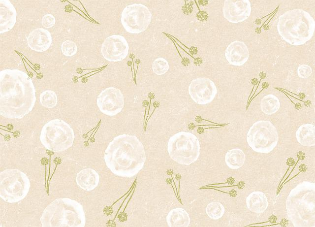

이미지 관련 태그
개요
2차원 평면 위에 그려진 시각적 요소를 의미
html에 주로 사용되는 이미지의 종류는 jpg, gif, png등이 있음
- jpg: 적은 용량으로 섬세한 색상과 명암 표현,1400만 색상을 사용해서 사진같은 이미지 구현에 주로 사용
- gif: 256 색상만 지원하기 때문 주로 아이콘 같은 단색계열의 이미지 표현에 사용, 단, 이미지의 배경을 투명으로 만들거나 여러개의 이미지를 합쳐 애니메이션처럼 만들 수 있음
- png: jpg와 gif의 장점을 따서 만든 이미지 형식,섬세한 이미지 표현과, 투명 이미지 작성에 주로 사용,jpg와 gif의 저작권 주장에 반발해서 오픈소스형태로 제작


어떤 이유로 인해 지정한 이미지를 웹 브러우저에 띄우지 못하는 경우 이미지를 대체할 텍스트 지정